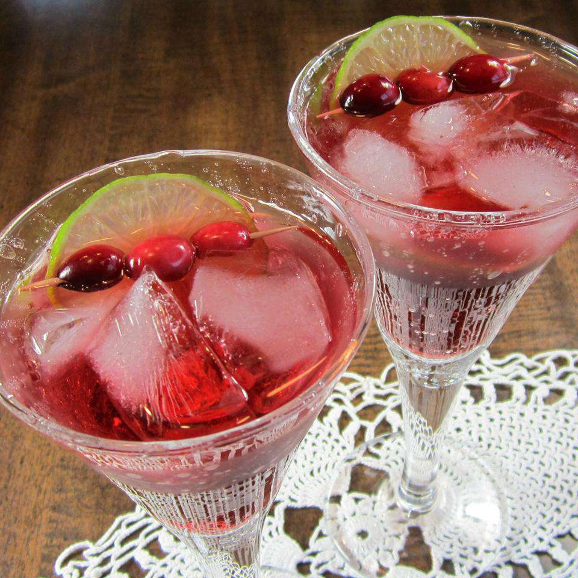

Cape Codder Cocktail

Cape Codder Cocktail
This Cape Codder cocktail is the original name for a cocktail commonly known as a vodka cranberry.
Ingredients
1 ½ fluid ounces vodka
5 fluid ounces cranberry juice
1 cup ice cubes
1 lime wedge for garnish
Steps
Pour vodka and cranberry juice into a highball glass filled with ice; stir well.
Garnish with a lime wedge.